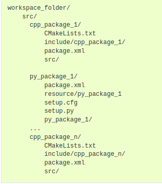

Как и для любой другой программы есть два способа установки:
Установка из бинарных пакетов или из исходного кода приведет к полнофункциональной и удобной для использования установке ROS 2. Различия между вариантами зависят от того, что вы планируете делать с ROS 2.
Бинарные пакеты предназначены для общего использования и предоставляют уже встроенную установку ROS 2. Это отличный вариант для тех, кто хочет сразу же освоиться и начать использовать ROS 2 как есть.
У пользователей Linux есть два варианта установки бинарных пакетов:
Пользователи Windows, которые выбирают установку из бинарных пакетов, имеют возможность использовать только бинарный архив (пакеты Debian доступны исключительно для Ubuntu/Debian).
Сборка из исходного кода предназначена для разработчиков, которые хотят изменить или явно исключить некоторые части базы ROS 2. Также рекомендуется для платформ, которые не поддерживают бинарные файлы. Сборка из исходного кода также дает вам возможность установить самую последнюю версию ROS 2.
В ROS 2 используется концепция объединения рабочих пространств с использованием среды shell. “Workspace (Рабочее пространство)” - это термин ROS, обозначающий место в вашей системе, где вы разрабатываете с помощью ROS 2. Основное рабочее пространство ROS 2 называется нижележащим (underlay). Последующие локальные рабочие области называются оверлеями (overlays). При разработке с использованием ROS 2, как правило, одновременно активируется несколько рабочих областей.
Объединение рабочих пространств упрощает разработку с использованием различных версий ROS 2 или различных наборов пакетов. Это также позволяет устанавливать несколько дистрибутивов ROS 2 (или “дистрибутивов”, например, Dashing и Eloquent) на один компьютер и переключаться между ними.
Это достигается путем поиска установочных файлов при каждом открытии новой оболочки или путем однократного добавления исходной команды в сценарий запуска оболочки. Без поиска установочных файлов вы не сможете получить доступ к командам ROS 2, а также найти или использовать пакеты ROS 2. Другими словами, вы не сможете использовать ROS 2.
Prerequisites:
Команды, используемые в этом руководстве, предполагают, что вы следовали руководству по установке бинарных пакетов для вашей операционной системы (пакеты Debian для Linux). Вы все еще можете следовать этому примеру, если вы создавали программу из исходного кода, но путь к вашим установочным файлам, скорее всего, будет другим. Вы также не сможете использовать команду:
sudo apt install ros-<distro>-<package>
(часто используемую в руководствах для начинающих), если вы устанавливаете из исходного кода.
Вам нужно будет запускать эту команду в каждой новой оболочке, которую вы открываете, чтобы получить доступ к командам ROS 2, например, так:
# Replace ".bash" with your shell if you're not using bash
# Possible values are: setup.bash, setup.sh, setup.zsh
source /opt/ros/jazzy/setup.bash
Или чтобы не выполнять эту команду каждый раз при открытии терминала, записать её в ~/.bashrc:
echo "source /opt/ros/jazzy/setup.bash" >> ~/.bashrc
Проверка переменных среды:
При использовании установочных файлов ROS 2 (setup.bash) будут установлены несколько переменных среды, необходимых для работы с ROS 2. Если у вас возникнут проблемы с поиском или использованием пакетов ROS 2, убедитесь, что ваша среда настроена должным образом, используя следующую команду:
printenv | grep -i ROS
Должно быть:
ROS_VERSION=2
ROS_PYTHON_VERSION=3
ROS_DISTRO=jazzy
Другие переменные:
export ROS_DOMAIN_ID=<your_domain_id>
Чтобы поддерживать эту настройку между сеансами shell, вы можете добавить команду в свой сценарий запуска shell:
echo "export ROS_DOMAIN_ID=
По умолчанию связь по протоколу ROS 2 не ограничивается локальным хостом. Переменная среды ROS_AUTOMATIC_DISCOVERY_RANGE позволяет ограничить диапазон обнаружения по протоколу ROS 2. Использование ROS_AUTOMATIC_DISCOVERY_RANGE полезно в определенных условиях, например, в классах, где несколько роботов могут публиковать сообщения в одной и той же теме, что приводит к странному поведению. Более подробную информацию смотрите в разделе Улучшенное динамическое обнаружение.
Если вы когда-нибудь столкнетесь с какими-либо проблемами при поиске или использовании пакетов с ROS 2, первое, что вам следует сделать, это проверить переменные среды и убедиться, что они установлены в соответствии с версией и дистрибутивом, которые вы хотели.
Чтобы увидеть список:
ros2 node list список нод
ros2 topic list список топиков
ros2 service list список служб
ros2 action list список действий

Второе отличие: если не ошибаюсь, не нужно вызывать мастера: >b>roscore.
Другое отличие: для building пакета теперь используется команда colcon вместо catkin_make и в результате будут создаваться каталоги install, build и log. devel не будет.
Рекомендуется создать папку src в рабочей области и создавать пакеты в ней. Это позволяет поддерживать “чистоту” верхнего уровня рабочей области.
Обычная рабочая область может выглядеть следующим образом:

Внутри src п появится новая папка my_package. Внутри my_package файл package.xml и ещё один src.
Теперь можно сделать building пакета:
colcon build
Будут build все пакеты в ros2_ws. Это нормально, когда в вашем рабочем пространстве всего несколько пакетов, но когда пакетов много, сборка colcon может занять много времени. Чтобы build один пакет, служит команда:
colcon build --packages-select my_package
Чтобы запустить ноду внутри пакета есть команда:
ros2 run my_package my_node
Далее возможно потребуется редактирование package.xml в ros2_ws/src/my_package.
Пакет создали.
Пакет был автоматически заполнен необходимыми файлами, а затем использовали colcon для его сборки, чтобы могли использовать его исполняемые файлы в своей локальной среде.
Перейти в ros2_ws/src. Там выполнить команду создания пакета:
ros2 pkg create --build-type ament_python --license Apache-2.0 py_srvcli --dependencies rclpy example_interfaces
В отличии от команды создания простого пакета здесь вместо ament_cmake используется ament_python.
Будет создан каталог пакета py_srvcli и все необходимые другие каталоги и файлы.
example_interfaces - это пакет, который включает в себя файл .srv, который вам понадобится для структурирования ваших запросов и ответов.
package.xml
Поскольку через опцию --dependencies указали какие зависимости есть у пакета, они автоматически запишутся в файл package.xml. Но все равно нужно будет проверить и заполнить как минимум теги description maintainer license.
Это же самое сделать для файла setup.py
Чтобы команда ros2 run могла запускать ноду службы, нужно в файле setup.py создать entry point (точку входа).
Чтобы могли запустить ноду клиента, также нужно отредактировать setup.py
После этого выполнить build:
colcon build --packages-select py_srvcli
В другом терминале:
source install/setup.bash
Служба и клиент созданы, теперь можно их проверять.
Несмотря на то, что рекомендуется использовать предопределенные определения интерфейса, иногда вам, вероятно, потребуется также определять свои собственные сообщения и сервисы. В этом руководстве вы познакомитесь с простейшим методом создания пользовательских определений интерфейса.
В этом руководстве вы создадите пользовательские файлы .msg и .srv в их собственном пакете, а затем будете использовать их в отдельном пакете. Оба пакета должны находиться в одной рабочей области.
Создаём новый пакет в ros2_ws/src:
ros2 pkg create --build-type ament_cmake --license Apache-2.0 tutorial_interfaces
В tutorial_interfaces создать каталоги msg и srv.
В tutorial_interfaces/msg создать файл Num.msg и Sphere.msg
В tutorial_interfaces/srv создать файл AddThreeInts.srv
Чтобы преобразовать определенные вами интерфейсы в код для конкретных языков (например, C++ и Python), чтобы их можно было использовать на этих языках, отредактировать CMakeLists.txt
Также отредактировать package.xml
Теперь, когда все части вашего пакета пользовательских интерфейсов готовы, вы можете создать (built) пакет. В корневом каталоге вашего рабочего пространства (~/ros2_ws) выполните следующую команду:
colcon build --packages-select tutorial_interfaces
В новом терминале:
source install/setup.bash
Все выполнено, можно проверять.
Теперь внести изменения в ноды созданных пакетов в предыдущих уроках, в CMakeLists.txt, package.xml.
После внесения всех изменений сделать снова build:
colcon build --packages-select py_pubsub
Можно теперь запускать ноды.